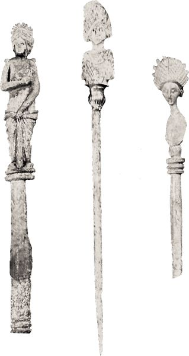

Addressed to two of Paul’s coworkers, and concerned with sound teaching and good church leadership for those Christian communities under the care of Timothy and Titus, these letters have been called “Pastoral Epistles” since early in the eighteenth century. Although they are not so much personal letters as general epistles that deal with problems related to the structure and function of church ministry and doctrine, they remain letters, and that means that they were addressed to specific problems at specific times and specific places. They are thus not to be understood as some kind of timeless manuals on how to run a church, any more than, say, Ephesians or 1 Peter, which are also both general letters. Like any other letters, they are addressed to particular problems at a particular time and place, and we must attempt to be as clear about those contexts as we can.
The letters are addressed to Timothy and Titus, two Christian workers known from the other letters of Paul and, in the case of Timothy, from Acts.
Timothy is identified as the son of Eunice (2 Tim 1:5; his grandmother’s name was Lois), a Jewish mother, and an unnamed Gentile father (Acts 16:1). He is described as a coworker (2 Cor 1:19) and companion (Acts 17:14–15; 18:5; 19:22; 20:4) of Paul. Paul himself identified Timothy as “brother” (Col 1:1; Phlm 1) and sent him on a variety of missions (1 Cor 4:17; 16:10; Phil 2:19, 23; 1 Thess 3:2, 6). A further indication of Timothy’s importance to the Pauline mission is his appearance as co-sender of several of Paul’s letters (1 Thess 1:1; 2 Thess 1:1; 2 Cor 1:1; Phil 1:1). Small wonder that the apostle paid tribute to him for his service and faithfulness (Phil 2:19–23; cf. 1 Thess 3:2). When these two letters were written to him, Timothy was envisioned as still a young man (1 Tim 4:12; 2 Tim 2:22), which by ancient reckoning would allow him to be up into his thirties.
Titus is unknown to the author of Acts. Paul identifies him as a person of Greek origin (Gal 2:3). His importance to Paul is clear from Paul’s acknowledgment of him as partner and coworker (2 Cor 8:23) and his attendance, at Paul’s behest, at the missionary conference in Jerusalem (Gal 2:1). Titus played an important role as an envoy of Paul to the Christians in Corinth, delivering a letter to them (2 Cor 2:4, 13; 7:6, 8) and mediating in the dispute between the apostle and the churches there (2 Cor 7:13–15). He was also active in promoting the offering for the poor in Jerusalem (2 Cor 8:16–18; cf. 9:5) to which Paul had agreed at the missionary conference (Gal 2:10). There is no reference to his age anywhere in the NT.
Since there is no decisive evidence concerning the chronological order of the three letters, we will consider them in their canonical order.
This letter is unlike the undisputed Pauline letters in that there is no thanksgiving at the beginning of the letter, the letter body shows no orderly development of themes or ideas, and there is no letter closing except for a final brief blessing. In these respects it is virtually identical in form to Titus.
The letter opening (1:1–2) identifies Paul rather extensively as an apostle, but in language different from that of other Pauline letters except the Pastorals. The blessing also differs in subtle ways in both form and content from the usual Pauline blessing (e.g., Phil 1:2). As already noted, there is no thanksgiving.
The letter body discusses three general themes, although in no organized or systematic way. We will consider each in turn.
19.1.1. True and False Teaching
The importance of this theme is indicated by where it occurs in the body of the letter. The first treatment (1:3–20) outlines a problem with people who are speculating about “myths and genealogies” (1:3–4), perhaps referring to some sort of Gnostic speculation about the various emanations of the divine godhead that produce a variety of divine beings, and their interrelationships to one another in the divine pantheon. The second problem, perhaps related to the first in that it also promotes deviation from the rule of love (1:5), concerns persons who are teaching “the law” of Moses but do not understand it (1:6–7). Apparently these people seek to apply the law to righteous people, whereas, the author declares, it is really meant to apply to the unrighteous and godless, a point which is clear in sound Christian doctrine (1:8–11). The author then turns to the kind of life Paul led before and after his conversion (1:12–14), pointing out that the intention of the mission of Jesus Christ, to save sinners, also proves true in Paul’s case, since, despite his former rejection of Christ, he was also the recipient of Christ’s mercy (1:15–17). The witness to this grace is the charge Paul has laid on Timothy, which Timothy is to perform by holding firm to the faith with a good conscience. Two persons who do not represent sound teaching are Hymenaeus and Alexander, who are also mentioned in 2 Timothy, Hymenaeus as one who proclaims that the resurrection of believers has already occurred (2 Tim 2:17–18), Alexander, identified as a coppersmith, as one who did great personal harm to Paul (2 Tim 4:14).
This topic is resumed in 3:14–4:10, where further tenets of the false teaching are identified, namely, the demand for ascetic practices in the matter of sex and food. In such false teaching, sex is forbidden even in marriage and abstention from certain foods is urged. Again, this seems to be a mixture of Jewish beliefs, in the distinction of pure and impure foods, and a Gnostic disdain for the material aspect of reality so as to concentrate fully on the spiritual dimension. Against this, the author argues that God made all things good, and neither sex in marriage nor food labeled “impure” is to be rejected if it is received with thanksgiving to God. Such ascetic practices are identified as “godless and silly myths,” and Timothy is urged to have nothing to do with them and to teach Christians to avoid such practices as well. This passage contains a fragment of an early confession (3:16) announcing that Christ himself appeared in flesh, and hence, apparently, life in the flesh is not to be disdained. The confession follows a regular grammatical structure, and alternates between statements about the material (flesh, nations, world) and the spiritual (Spirit, angels, glory), thus pointing to the importance of both aspects of reality for Christians.
The final short passage devoted to true and false teaching (6:3–5) condemns in highly negative terms those who propagate false doctrines.
19.1.2. Conduct within the Christian Fellowship
While there is some overlap between this theme and the previous one, the emphasis here (4:11–5:2; 5:22b-23; 6:11–14) is on the appropriate conduct of believers rather than on description of those who teach inappropriate beliefs and actions. Woven into this material is advice on Timothy’s behavior within the fellowship of the Christian community.
Introducing the comments on Christian conduct is a general exhortation to live as good citizens of the civil state (2:1–2), indicating the author’s conviction that decent lives led by Christians will not arouse the wrath of the Roman state or of their neighbors. There may have been a tendency among Christians to feel that now that they had a new lord (2:3–7) they were free from civic restraint on their activity. That was not a valid conclusion, however, as is here pointed out.

Bone hair-pins from ca. 100 CE; the one in the center has some gold decoration (Richard Cleave)
The comments about the appropriate dress and adornment of Christian women — gold, pearls, costly attire (2:9) — may be directed to wealthy women who had few pressing duties (and so had the leisure to go from house to house, 5:6, 13) and were targeted by deceiving false teachers (2:13–14), who may indeed have sought their money (6:5). If so, 2:9–12 is directed against such women rather than women in general. Some wealthy Christians apparently thought the admiration awarded them in secular society should be given them also in church and also represented a temptation to poorer church members to court the wealthy among them (in addition to 6:5–10, 17–19, see Jas 2:2–7). The counsel that women bear children (2:15; 5:14) was probably written to counter the asceticism of the false teachers who disdained the physical aspects of marriage (4:3). The pressure to conform to social norms underlies the advice to slaves not to neglect their duties because of the brotherhood of slave and master within the Christian community: disdain for such norms would bring potentially lethal discredit on the nascent church.
The advice to Timothy assumes his youth and deals with how to function without giving offense to either his contemporaries or those older (4:11–5:2). The advice to consume some wine for the sake of Timothy’s health and digestion (5:23) reflects common wisdom of the time. The general advice on his conduct as a Christian leader (6:11–14) reflects not so much advice to Timothy personally, although it is also that, as the ideal activity of the Christian leader in the latter part of the first century.
19.1.3. Church Order (or Structure)
Four groups of persons who apparently played special roles in the Christian community are described: bishops, deacons, widows, and elders. Bishops must display virtues appropriate not only for leadership in the Christian community (3:1–6) but also for maintaining the good reputation of Christians with nonbelievers (3:7). They must be men of decency and have maintained good relations within their own families, and so have been married once (v. 2) and able to manage their own children (vv. 4–5). That they are not to be recent converts (v. 6) indicates the need to be clear about the meaning of the Christian faith in their own lives before they assume responsibility for others. References to money in regard both to bishops and to deacons (3:3, 8) may indicate they received a stipend for the performance of their duties (cf. 5:17–18).
Deacons are described in similar terms (3:8–13). The reference to women in this discussion (3:11) gives no indication that the author is referring to the wives of male deacons. The presence of women as deacons is attested by Rom 16:1, and this lends credence to the supposition that the words against women in leadership positions earlier in the letter (2:11–12) may well be restricted to the women described there.
Much of the description of widows is drawn simply from the need in the ancient world, in the absence of any official institutions for care of the aged, for families to care for their own members (5:3–8, 16). The three conditions laid down for enrollment of widows, however, points to a more specific role for them within the early Christian community. Such a widow must have demonstrated good character during her time in the Christian community (v. 10) and be at least sixty years of age and married only once (v. 9). The advice that younger widows remarry (v. 14) reflects the problems such young women could pose for the church (vv. 11–15) and the apparent condition for enrolled widows that they vow not to remarry (v. 11b). The letter of Ignatius, a church leader in Antioch in the late first century, to the Christians in Smyrna refers to “the virgins who are called widows” (13:1). This may indicate a further development in this category of church order.
Little is said about elders other than that they should be worthy of the stipend paid them for the performance of their duties (5:17–18). That they were apparently more open to charges against them (vv. 19–20) than the other three offices mentioned may indicate that, in addition to their duties of preaching and teaching (v. 17), they were responsible for the finances of the community, although this must remain conjectural. The reference to laying on of hands (v. 22a) may refer to the way in which elders, or perhaps all church leaders, were commissioned, although in the context that is difficult to determine.
The letter concludes with a final exhortation (6:20–21a) and a concluding benediction (6:22b). The letter closing is much shorter than those of the usual Pauline letter, with the absence here of any greetings or personal remarks. On the whole, the letter gives the impression of a kind of pastoral letter to all who sought advice on the role of members and officers of the Christian community as it sought to make its way in the Greco-Roman world of the late first century.
This letter bears the closest resemblance of the three Pastoral letters to the undisputed letters of Paul, even with respect to its structure. All the elements of the genuine Pauline letters are present. Some have suggested that this letter may have been intended to serve as Paul’s farewell testament (for a similar last testament, see Acts 20:17–36), a regular literary form in the ancient world with respect to important people. Yet such statements normally do not take the form of personal letters, and we would probably be better served to treat it as a letter rather than as having some ulterior purpose.
The letter opening (1:1–2) is cast in familiar Pauline style, with a somewhat extended identification of Paul as apostle and the usual opening blessing. As is the case in some of the other letters, it is difficult to determine where the thanksgiving ends and the letter body begins. Perhaps one should regard the thanksgiving proper as contained in 1:3–4, with the transition to the body beginning with 1:5–7, since grammatically those verses belong to the opening sentence. Paul’s gratitude for the faith that has been manifested by Timothy’s mother (and grandmother!) points to Timothy as a second- or even third-generation Christian.
The letter body (1:8–4:18) alternates between reports of Paul’s life and his present situation, and advice to Timothy about his ministry. Beginning with an exhortation to Timothy to be bold in his proclamation of the gospel, that is, of what God has done in Christ (1:8–10), Paul then recounts his own call (1:11–12), something that seems somewhat out of place if the letter is indeed to be a personal communication to one of his coworkers. In fact, it indicates that the letter is intended for a wider audience, one that may not be so familiar with Paul’s career. The body continues with further exhortations to Timothy with respect to his own ministry (1:13–14) and concludes with an account of Paul’s current state of affairs, including his betrayal in Asia (1:15) and the kindness of one Onesiphorus (1:16–18), who had aided Paul in both Rome and Ephesus and who is included among those who send greetings at the end of the letter (4:19).
Returning to exhortations to Timothy (2:1–7), Paul recites a series of examples from secular life that have application to Timothy’s missionary activity and then gives another summary of the content of his own gospel and the current suffering he is undergoing (2:8–13). Included in these verses is what appears to be a fragment of an earlier Christian hymn or confession (2:11–13) that emphasizes both the connection of the Christian to Christ’s fate and the necessity for the Christians not to deny Christ, something apparently required of Christians when pressed by unbelieving neighbors or when questioned by legal authorities. Even in this last case, however, Christ’s ultimate faithfulness to sinful humanity is affirmed (see Rom 3:3), in contrast to any supposed danger of Christ denying those who deny him (see Mark 8:38).
Further exhortations to Timothy (2:14–19) include a warning against two men, Hymenaeus and Philetus, who have apparently unsettled the church with their teaching that the resurrection is already past. These same two men were mentioned in 1 Tim 1:20 with no indication there of the content of their teaching, but with the news that Paul had delivered them to Satan (probably meaning that he cast them out of the Christian fellowship). Given the way the two men are discussed, it appears that this reference in 2 Timothy might have preceded the one in 1 Timothy, a possible indication of the chronological order of the letters.
After a discussion of the many kinds of vessels needed in a large household (2:20–21), evidently to indicate that the church as the household of God needs people for menial as well as great tasks, Paul again advises Timothy on how he is to comport himself within the Christian community (2:22–26), perhaps reflecting the way a vessel, once purified, can be of noble use for the head of the household (2:21).
A list of vices (3:1–5) introduces the next segment of the letter body. Then Paul discusses the problems caused by people characterized by these vices, which include misleading some of the women in the Christian community (3:6–7). Paul compares such person to Jannes and Jambres, two men who according to Jewish tradition were among the magicians of Pharaoh that opposed Moses (Exod 7:11, 22); the opposition of people characterized by the vices included in the preceding list will have no more success in thwarting God’s purposes than did Pharaoh’s magicians (3:8–9).
Returning once more to his own career, Paul points out that despite the inevitability of persecution for one who lives an appropriate Christian life (3:10–13), Timothy must continue to lead just such a life, as he has from childhood, when he began to be instructed by the sacred Scriptures. In this context, “sacred Scriptures” can only refer to what we know as the OT, since when this letter was written there were as yet no “Christian Scriptures,” that is, a NT. Paul assures Timothy that such Scriptures are valuable because God has inspired them to be useful for religious purposes: teaching, reproof, correction, and training in righteousness, so that those desiring to do God’s will may be equipped for their task (3:16–17). This passage says nothing about the NT, or about Scripture being infallible in all matters including natural science and geography. The Scriptures (the OT) are highly valuable in showing people how to live as God wants them to live; that is the burden of these often misused verses.
The final segment directed to Timothy (4:1–5) is cast in the form of an exhortation appropriate to anyone who seeks to undertake the work of Christian proclamation. Again, Timothy is prototypical, an example of the kind of person the Christian evangelist ought to be.
Paul concludes the letter body with a recitation of his current circumstances, which have brought him to the verge of martyrdom (4:6–8). After a recitation of the way various people have acted in relation to him (4:10–15; this is introduced with the plea in v. 10 that Timothy come to Paul soon), Paul reports on his trial. No one has testified in his behalf — perhaps a covert reference to the resemblance of Paul’s fate to that of Jesus, who was also deserted by his followers at the time of his trial. Nevertheless, Paul was evidently able to present an effective enough defense to be spared condemnation. Yet it is difficult to know whether his rescue from the lion’s mouth is to be taken literally as a description of the consequences of a guilty verdict, or metaphorically as deliverance from some other unthinkable fate. In light of Paul’s earlier anticipation of martyrdom (4:6–8), his final assurance that God will rescue him from every evil (4:18) may be intended to mean that God will protect him from denying his faith and so ensure his final participation in God’s kingdom. If that is so, deliverance from “the lion’s mouth” by being given strength to proclaim the gospel rather than deny it may refer metaphorically to deliverance from the power of Satan (for a similar comparison, see 1 Pet 5:8). Paul concludes the letter body with an ascription of praise.
The letter closing contains the familiar Pauline greetings to those with the letter’s recipient and from those with Paul. That Timothy is to greet Prisca and Aquila, who are mentioned in both Acts (18:2, 18, 26) and Paul’s undisputed letters (Rom 16:3; 1 Cor 16:19), does not aid us in determining Timothy’s location, since this Christian couple is reported to have lived at various times in Ephesus, Rome, and Corinth. Erastus, similarly known from both Acts 19:22 and Rom 16:23, is described as remaining in his civic position in Corinth. Trophimus, originally from Asia (Acts 20:4), perhaps Ephesus, accompanied Paul on his final trip to Jerusalem (Acts 21:29) and was the cause of an uproar there. It is uncertain when the illness that caused him to remain in Miletus occurred. Of the remaining names, Onesiphorus, mentioned earlier in the letter (1:16), is otherwise unknown, as are Eubulus, Pudens, Linus, and Claudia. That these last four, along with all the “brethren” (i.e., fellow Christians), send greetings indicates that Paul is no longer deserted by all. The letter concludes with two forms of the familiar Pauline grace wish.
Despite the personal details scattered throughout the letter, the advice contained in it also makes it helpful as a general exhortation to those who look to Paul for guidance so that they might remain faithful to the gospel, whatever difficulties might present themselves. The letter has been used in that way for almost two millennia within the Christian community.
The letter opening of the letter to Titus (1:1–4) is, like that of 1 Timothy, different from the normal letter openings of the undisputed Pauline letters. The introduction of Paul as author is longer than in any other Pauline letter except Romans. Perhaps, as in Romans, this description of Paul’s gospel and his apostleship were intended to remind those who read it of the true nature of Paul and of his gospel. Early Christian letters were by and large intended to be read to the assembled Christian community, as is shown by the remarks in 1 Thess 5:27 and Col 4:16, and the author may have had such an occasion in mind when he provided this lengthy introduction. The benediction (1:4b), similar to that found in the undisputed Pauline letters, is nevertheless slightly different, referring to Christ Jesus as “Savior,” which is unusual for Paul (Phil 3:20; cf. Eph 5:23); Christ’s more normal title in such a place is “Lord.” As in 1 Timothy, the normal Pauline thanksgiving is also omitted.
The letter body (1:5–3:14) treats three general topics: church order (1:5–9), false teaching (1:10–16), and community relations and belief (2:1–3:11). The letter body closes with some personal instructions to Titus about some fellow Christians (3:12–14).
The language with which the title “bishop” is introduced (1:7) makes it seem likely that the author uses that title along with “elder” (1:5) to describe the same church leader, unlike 1 Timothy, where the two titles clearly represent two different orders of church leaders. By the time Titus was written, it was common to have such leaders in every Christian community (1:5), who by their lives and teaching were good examples to the other Christians. In this instance, there is strong emphasis on the teaching duties of the elder/bishop (1:9), indicating that such leaders were a first line of defense against those who sought to disrupt the Christian communities.
In a somewhat perfunctory manner, the author describes those against whose false teaching the church leaders are to protect their fellow Christians (1:10–16). As in 1 Timothy, there are statements that could indicate influence from both Judaism (1:14a) and a kind of Gnosticism (1:16a) on the false teachers, although the content of their position is not spelled out in any detail. The reference to their lack of appropriate acts may be a reference to the kind of asceticism against which 1 Tim 2:15; 4:3; and 5:14 warn. But that remains speculative. These short characterizations were useful as reminders to people who were already familiar with the longer descriptions in 1 Timothy.
Under the rubric of the sound doctrine that Titus (presumably along with the elders/bishops) is to teach, the largest portion of the letter body is given over to a list of appropriate activities for various types of people (2:2–6). While not cast in the traditional form of a household code, it functions here in much the same way, giving specific advice to younger and older men, younger and older women, and slaves. In the midst of the “code” is advice to Titus to conduct himself in such a way as to give the lie to those who accuse Christians of evil activity (a similar point is made in 1 Pet 3:15–16). It is likely that such a desire to deprive opponents of evidence for their accusations underlies the advice given to the various groups addressed here.
After a short passage outlining the content of the faith (2:11–14), the letter body continues with general exhortations (2:15–3:2) that appear to call on Paul’s own past (3:3–7), described here in terms that are probably shaped to reflect the past of the readers themselves (v. 3), as illustration. The concluding remark — “the saying is sure” (3:8) — indicates that the author is quoting from Christian tradition.
The final exhortations (3:8–11) cast further light on the kind of problem the author anticipates occurring in the Christian community, namely factious disputes triggered by the views of what in 1 Timothy are called “false teachers” (3:9). Discipline against those engaged in such disputes involves isolating them from other Christians (3:10–11).
The letter body closes with some personal notes on Paul’s condition at the time of writing (3:12–13). Of those named, Artemas and Zenas are mentioned only here; Tychicus is mentioned in the later Pauline letters (Eph 6:21; Col 4:7; 2 Tim 4:12; cf. Acts 20:4); Apollos was a Christian famous for his eloquence (Acts 18:24) who had worked as a missionary in Corinth with Paul (1 Cor 16:12; cf. 1:12; 3:4–6, 22; 4:6).
The letter closing is brief (3:15), containing a general statement about greetings from those with Paul and to those with Titus. It concludes with a typically Pauline grace wish.
Like 1 and 2 Timothy, this letter, despite being written to ancient readers in the Greco-Roman world, has proved, as have the other NT letters written under similar circumstances, to be useful over the centuries to churches plagued with the same kind of problems addressed here in the earliest period of the Christian church.
One of the more vexing problems with these letters has to do with their authorship. Yet however we decide the issue, it is simply not true, as one scholar has argued, that our judgment of their value depends on whether the person who wrote them was Paul or a disciple of Paul. These letters have been treasured by the worldwide Christian community for almost 2000 years and have proved of value regardless of their author. One does not value the Gospels by who may or may not have written them or regard the author of Hebrews, whoever it may have been, determinative of what value Hebrews has for us. The same is true of these letters. They have proved of value to the Christian church whoever the author may have been.
Those who argue for an author other than the apostle Paul usually cite the following evidence and arguments.
1. The language and style of the Pastorals are quite different from those of the acknowledged Pauline letters. There is a higher proportion of words per sentence appearing nowhere else in the Pauline letters than in any other letter attributed to Paul, and a large number of those words are more characteristic of writings of the early second century than of the other Pauline epistles. Some words that do appear in the undisputed letters of Paul are used in these letters with a different intention: faith, for example, tends more often to refer not to trust but to the body of Christian doctrine (e.g., 1 Tim 1:19; 3:19; 4:1; 2 Tim 3:8; 4:7; Titus 1:13). Truth now also has the same meaning, namely, Christian teaching (e.g., 1 Tim 3:15; 4:3; 2 Tim 2:15; 3:8; Tit 1:14). “Savior” is also used frequently for both Christ and God in the Pastorals; it is used of Christ only once in the undisputed Pauline letters (Phil 3:20; once also in Eph 5:23) and never of God. Most telling of all, some nineteen particles, conjunctions, and adverbs that characterize the undisputed Pauline letters are absent from the Pastorals; an author tends to use such words automatically, and their absence betrays an author other than Paul.
2. The historical situation presumed in the letters is difficult to fit into what we know of Paul. 1 Timothy presumes that Timothy stayed in Ephesus when Paul left (1:3), but there is no indication in Acts or the other Pauline letters that Timothy remained in Ephesus after Paul left. Furthermore, so close a companion of Paul would hardly need such detailed instruction on doctrine and practice as is given in 1 Timothy.
Titus presumes that Paul was in Crete and then left Titus there to continue the work. There is, however, no other indication that Paul ever conducted a mission in Crete or was ever at Nicopolis. The only mention of Crete in connection to Paul is that, as a prisoner, he sailed near there but was driven off by a storm before anchorage for the winter could be achieved (Acts 27).
Similarly, 2 Timothy presumes travels of Paul with and without Timothy that have no other record either in Acts or the Pauline letters.
For such travels to have taken place, one would have to locate them at a time not covered by either Acts or the other Pauline letters. Such a period is possible after Paul’s Roman imprisonment, with which Acts concludes. Such a solution has great difficulties, however, among them:
a. The end of Acts gives no information about Paul’s release or execution, but Acts 20:25 and 38 clearly imply that Paul never returned to the churches in the East.
b. Similarly, Paul’s planned trip to Spain (Rom 15:24), if it occurred, would have taken place after Paul was released from imprisonment in Rome. Such a journey is implied in 1 Clement 5:7, which says that Paul went to “the limits of the West,” that is, to Spain, though Ignatius (Romans 2) uses the same word, “West,” to refer to Rome. Further, there is no evidence outside Titus for Paul’s further mission to Crete.
c. 2 Tim 4:6–8 implies that Paul’s martyrdom is at hand, but that makes the request that Timothy come before winter and bring Paul’s cloak and a certain manuscript (4:13, 21) somewhat enigmatic, since Paul would not have that much time left to him were he facing execution. Some have suggested that 2 Timothy may incorporate genuine Pauline fragments, but there is no textual evidence to support that idea.
In short, for the Pastorals to have been written by Paul, Paul must have returned to the eastern Mediterranean after his Roman imprisonment and initiated a mission to Crete. Of this journey back from Rome there is no other evidence.
3. The views of the false teachers who are opposed are characterized by a combination of Judaism (abstinence from certain foods: 1 Tim 4:3; 5:23; Tit 1:15) and Gnosticism (opposition to marriage: 1 Tim 2:15; 4:3; 5:14; speculation in genealogies and “false myths”: 1 Tim 1:4; cf. Tit 3:9; and affirmation that the resurrection was already past: 2 Tim 2:18). Such teachings do not, however, reflect the full-blown Gnostic systems of the second century and hence cannot be used to argue for that late a date. But, in opposing the false teachings, the author of the Pastorals does not confront them with the gospel of Christ, as Paul does in some of his other letters. Rather, the false teachers are simply denounced and their views contrasted with traditional Christian teachings, from which they have fallen away and to which they should return (e.g., 1 Tim 4:1; 6:20; 2 Tim 1:4; 2:2; Tit 3:10–11).
4. Church leaders — bishops, elders, deacons, widows — occupy a central place in the letters. While Paul does mention bishops and deacons once (Phil 1:1), he is not concerned with their character or duties. Paul nowhere mentions elders as church leaders, though Acts, written later, assumes the presence of elders in every church (14:23); nor does Paul mention widows. The attempt to regularize the official leadership of the church and to clarify the functions of the leaders also characterizes the Didache and the letters of Ignatius (see also 1 Clem. 44:2), all of which originated late in the first century. That would seem also to point to a later date for the Pastorals.
Although 2 Timothy is closest in style and content to Paul’s other letters, the similarity of language and style among the three Pastorals indicates that the same author wrote all three. To account for the differences in style and content by use of a different secretary is to remove Paul from major responsibility not only for these letters but also for his other letters as well. Such a solution also ignores the fact that Romans, written out by Tertius (Rom 16:22), betrays the same style as the other undisputed letters of Paul. It appears, therefore, that the transcriber (a more accurate word than “secretary”) of a Pauline letter did not exercise that much influence on style or content.
Perhaps the author of the Pastorals was a student of Paul or a member of his circle, one who therefore had known Timothy and Titus, who had traditions about travels of Paul not mentioned in his letters or in Acts (hence the personal touches in 2 Timothy), and who wished to use them in such a way that the towering stature of Paul as the Apostle to the Gentiles would give added authority to this application of Paul’s theology to problems that arose some years after his death. Perhaps the author addressed the letters to two trusted companions of Paul to illustrate for the readers the kind of advice the two would have received from the apostle about their conduct as missionaries in the Greco-Roman world of the first century. In that way, Paul’s thought could be applied to the kind of problems that were emerging as the church was maturing and gaining ever larger footholds in the ancient world.
However one may wish to explain authorship and addressees, however, any such explanation remains speculative. While many deem it unlikely that the apostle wrote these three letters, certainty in this matter is simply not available.
Why the letters were written is clear from their content. False teachings have arisen, and there is a need for sound doctrine, pious life, and solid church order. The advice to church leaders indicates that perhaps some of them have been affected by the false teachers denounced in these letters. The advice to such leaders is more prominent in 1 Timothy and Titus than in 2 Timothy, which appears intended to serve as a literary testament of the apostle on his way to his death (2 Tim 4:6–8). The larger motive for the composition of these letters in Paul’s name is given in 2 Tim 2:2: the need to pass on the Pauline traditions. In addition, there was the need to apply those traditions to the new problems arising in the latter part of the first century.
When they were written is difficult to determine with any precision. The best guess is probably the last third of the first century, after the death of Paul. It is also difficult to determine their sequence; their current order is predicated on length, and hence the numerations “1” and “2” Timothy refer to length rather than chronological order. It may well be that 2 Timothy was written first, perhaps by someone who knew the details of Paul’s last days (2 Tim 4:9–17), and that subsequently 1 Timothy and Titus were written, perhaps by someone else in imitation of the style and content of 2 Timothy.
As to place of origin, 2 Tim 1:15, 18 implies that the letter was written from Ephesus, while 1:17 could be interpreted to mean that Paul was writing from Rome. Tit 3:12 could mean Paul was already in Nicopolis and writing from there. 1 Timothy gives no indication of its place of origin. Some have suggested that the similarity of language and teachings to the Philippians of Polycarp, an early second-century bishop in Smyrna, may indicate Asia Minor as the point of origin, but we cannot know with any certainty.
The textual evidence of the letters shows no obvious insertions or dislocations that would compromise their textual integrity. There are some hymnic fragments in the letters (e.g., 1 Tim 3:16, perhaps 6:15–16). Some have suggested that the personal notes in 2 Timothy represent fragments of genuine letters of Paul incorporated into this letter. In either case, the textual evidence indicates that these traditions and fragments were included in the letters from the time of their origin.
FOR FURTHER READING
Martin Dibelius and Hans Conzelmann, The Pastoral Epistles (Hermeneia; Philadelphia: Fortress, 1972)
Luke T. Johnson, Letters to Paul’s Delegates: 1 Timothy, 2 Timothy, Titus (The New Testament in Context; Valley Forge: Trinity Press International, 1996)
J. N. D. Kelly, The Pastoral Epistles (London: Black, 1963)
George Knight, The Pastoral Epistles (New International Greek Testament Commentary; Grand Rapids: Eerdmans, 1992)
I. Howard Marshall, A Critical and Exegetical Commentary on the Pastoral Epistles (International Critical Commentary; Edinburgh: Clark, 1999)
William D. Mounce, Pastoral Epistles (Word Biblical Commentary; Nashville: Nelson, 2000)
Jerome D. Quinn, Titus (Anchor Bible; New York: Doubleday, 1990)
Jerome D. Quinn and William C. Wacker, The First and Second Letters to Timothy (Eerdmans Critical Commentary; Grand Rapids: Eerdmans, 2000)
Frances Young, The Theology of the Pastoral Letters (Cambridge: Cambridge University Press, 1994)